CODING AGENTS AS PIXEL WORLD MODELS
traex/DeepSeek-V4.1-Flash · 0184
点击播放 · 原生 RGB 像素
逐轮保存的候选
回放视频、检查图与代码变化。
每份候选均可单独播放。实际图片检查记录在下方工具轨迹中。
候选 01播放与检查图
点击播放 · 原生 RGB 像素
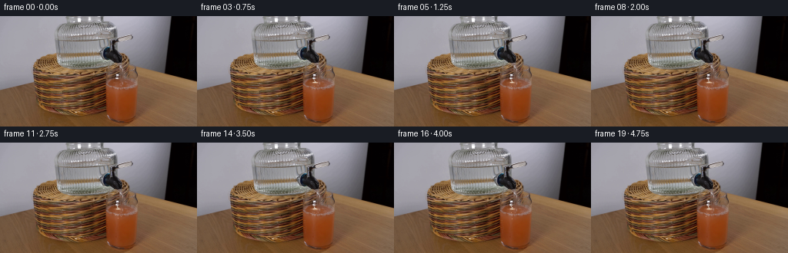
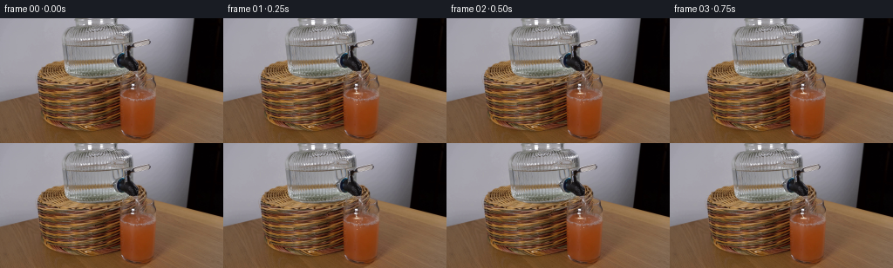
展开代码变化
--- 上一保存版本
+++ 本次保存版本
@@ -0,0 +1,245 @@
+from pathlib import Path
+
+import cv2
+import numpy as np
+from PIL import Image
+
+import artifact_io
+
+
+ROOT = Path(__file__).resolve().parent
+W, H, N, FPS = 256, 144, 20, 4
+
+
+def smoothstep(edge0, edge1, value):
+ t = np.clip((value - edge0) / (edge1 - edge0), 0.0, 1.0)
+ return t * t * (3.0 - 2.0 * t)
+
+
+def alpha_blend(image, color, alpha):
+ alpha = np.asarray(alpha, dtype=np.float32)[..., None]
+ color = np.asarray(color, dtype=np.float32)
+ return image * (1.0 - alpha) + color * alpha
+
+
+def composite(image, layer, alpha):
+ alpha = np.asarray(alpha, dtype=np.float32)[..., None]
+ return image * (1.0 - alpha) + layer * alpha
+
+
+def soft_ellipse(x, y, cx, cy, rx, ry, softness=0.8):
+ q = np.sqrt(((x - cx) / max(rx, 1e-3)) ** 2 + ((y - cy) / max(ry, 1e-3)) ** 2)
+ return np.clip((1.0 + softness - q) / softness, 0.0, 1.0)
+
+
+def draw_droplet(image, cx, cy, radius, color, opacity):
+ x0 = max(0, int(np.floor(cx - radius - 2)))
+ x1 = min(W, int(np.ceil(cx + radius + 2)))
+ y0 = max(0, int(np.floor(cy - radius - 2)))
+ y1 = min(H, int(np.ceil(cy + radius + 2)))
+ if x0 >= x1 or y0 >= y1:
+ return
+ yy, xx = np.mgrid[y0:y1, x0:x1]
+ d = np.sqrt((xx - cx) ** 2 + (yy - cy) ** 2)
+ coverage = np.clip((radius + 0.55 - d) / 0.9, 0.0, 1.0) * opacity
+ image[y0:y1, x0:x1] = composite(
+ image[y0:y1, x0:x1], np.broadcast_to(color, (y1 - y0, x1 - x0, 3)), coverage
+ )
+
+
+def stream_geometry(y, time):
+ # The nozzle points slightly into the glass, so the short water column bends
+ # gently to the right before it reaches the juice.
+ u = np.clip((y - 79.7) / 7.0, 0.0, 1.0)
+ phase = time * 2.15
+ center = (
+ 151.15
+ + 2.15 * u
+ + 0.23 * np.sin(2.4 * np.pi * u + phase)
+ + 0.10 * np.sin(7.0 * u - 1.7 * phase)
+ )
+ width = 0.72 + 0.13 * (1.0 - u) + 0.07 * np.sin(4.0 * np.pi * u - phase)
+ return center, width
+
+
+def render_stream(frame, time):
+ x0, x1, y0, y1 = 147, 160, 79, 88
+ yy, xx = np.mgrid[y0:y1, x0:x1]
+ center, width = stream_geometry(yy.astype(np.float32), time)
+ distance = np.abs(xx - center)
+ active = smoothstep(79.4, 80.2, yy) * (1.0 - smoothstep(86.0, 87.0, yy))
+
+ body = np.clip((width + 0.62 - distance) / 0.72, 0.0, 1.0) * active
+ core = np.clip((0.46 - np.abs(xx - (center - 0.25))) / 0.48, 0.0, 1.0) * active
+ texture = 0.86 + 0.14 * np.sin((yy - 79.0) * 1.8 - time * 8.0 + xx * 0.4)
+ body *= texture
+
+ region = frame[y0:y1, x0:x1]
+ shifted_x = np.clip((xx + 1.15).astype(np.int32), 0, W - 1)
+ shifted_y = np.clip(yy.astype(np.int32), 0, H - 1)
+ refracted = frame[shifted_y, shifted_x].astype(np.float32) * 1.06 + 7.0
+ region = composite(region, refracted, body * 0.48)
+ region = composite(region, np.array([190.0, 198.0, 194.0]), body * 0.24)
+ region = composite(region, np.array([246.0, 248.0, 242.0]), core * 0.73)
+ frame[y0:y1, x0:x1] = region
+
+
+def render_ripples(frame, time):
+ yy, xx = np.mgrid[0:H, 0:W].astype(np.float32)
+ cx, cy = 153.25, 86.1
+ dx = xx - cx
+ dy = yy - cy
+
+ liquid = (
+ (xx >= 145.0)
+ & (xx <= 179.0)
+ & (yy >= 84.0)
+ & (yy <= 135.0)
+ & (frame[:, :, 0] > frame[:, :, 1] + 18.0)
+ & (frame[:, :, 0] > frame[:, :, 2] + 24.0)
+ ).astype(np.uint8)
+ liquid = cv2.erode(liquid, np.ones((3, 3), np.uint8), iterations=1)
+ liquid_soft = cv2.GaussianBlur(liquid.astype(np.float32), (0, 0), 0.75)
+ depth_decay = np.exp(-np.maximum(dy, 0.0) / 9.0)
+ horizontal_decay = np.exp(-(dx / 15.0) ** 2)
+ phase = time * 4.35
+ radial = np.sqrt((dx / 1.25) ** 2 + dy**2)
+ wave = np.sin(2.1 * radial - phase + 0.45 * np.sin(dx * 0.7))
+ warp_amount = 0.58 * horizontal_decay * depth_decay * liquid_soft
+ map_x = xx + 0.12 * wave * warp_amount
+ map_y = yy + wave * warp_amount
+ warped = cv2.remap(
+ frame, map_x, map_y, interpolation=cv2.INTER_LINEAR, borderMode=cv2.BORDER_REFLECT_101
+ )
+ frame[:] = composite(frame, warped, liquid_soft * 0.92)
+
+ crest = np.clip(wave * 0.5 + 0.5, 0.0, 1.0)
+ crest_alpha = liquid_soft * horizontal_decay * depth_decay * (0.025 + 0.035 * crest)
+ frame[:] = composite(frame, np.full_like(frame, (222.0, 145.0, 91.0)), crest_alpha)
+
+
+def render_impact(frame, time):
+ y0, y1, x0, x1 = 82, 94, 144, 166
+ yy, xx = np.mgrid[y0:y1, x0:x1].astype(np.float32)
+ cx, cy = 153.25, 86.25
+ phase = time * 5.7
+
+ # The persistent contact foam is deliberately small: the glass is already
+ # full, so the visual cue is a tight, agitated patch rather than a new head.
+ rx = 2.65 + 0.38 * np.sin(phase * 0.72)
+ ry = 0.92 + 0.11 * np.sin(phase + 0.8)
+ cap = soft_ellipse(xx, yy, cx, cy, rx, ry, softness=0.95)
+ mottling = 0.72 + 0.28 * np.sin(xx * 4.9 + yy * 2.4 + phase * 1.35)
+ cap_alpha = cap * (0.34 + 0.13 * mottling)
+ region = frame[y0:y1, x0:x1]
+ region = composite(region, np.array([229.0, 197.0, 166.0]), cap_alpha)
+
+ highlight = soft_ellipse(xx, yy, cx - 0.55, cy - 0.28, 1.85, 0.48, softness=0.65)
+ region = composite(region, np.array([250.0, 242.0, 224.0]), highlight * (0.45 + 0.12 * mottling))
+
+ # Ripple rings move outward and fade. Two staggered rings keep the surface
+ # active at 4 fps without making the motion look periodic.
+ for offset in (0.0, 0.55):
+ age = (time * 0.92 + offset) % 1.05
+ ring_rx = 2.0 + 7.4 * age
+ ring_ry = 0.52 + 1.55 * age
+ q = np.sqrt(((xx - cx) / ring_rx) ** 2 + ((yy - cy) / ring_ry) ** 2)
+ ring = np.exp(-((q - 1.0) / 0.14) ** 2)
+ ring *= (1.0 - age) * (0.75 + 0.25 * np.sin(np.arctan2(yy - cy, xx - cx) * 5.0 + phase))
+ region = composite(region, np.array([242.0, 171.0, 119.0]), ring * 0.19)
+
+ # Tiny foam bubbles at the contact point.
+ bubble_data = [
+ (-1.7, -0.1, 0.55, 0.1),
+ (1.2, -0.25, 0.48, 2.4),
+ (2.6, 0.1, 0.38, 4.1),
+ (-2.9, 0.18, 0.34, 5.2),
+ ]
+ for bx, by, radius, seed in bubble_data:
+ wobble_x = 0.20 * np.sin(phase * 1.25 + seed)
+ wobble_y = 0.10 * np.cos(phase * 1.1 + seed)
+ bubble = soft_ellipse(xx, yy, cx + bx + wobble_x, cy + by + wobble_y, radius, radius * 0.8, 0.6)
+ region = composite(region, np.array([248.0, 235.0, 217.0]), bubble * 0.40)
+
+ frame[y0:y1, x0:x1] = region
+
+
+def render_splash(frame, time):
+ cx, cy = 153.25, 86.2
+ # A few water droplets are launched at fixed intervals. Their short ballistic
+ # arcs stay inside the glass mouth and read as a splash, not a fountain.
+ droplets = [
+ (-0.65, -11.8, 0.03, 0.34),
+ (0.50, -13.7, 0.42, 0.39),
+ (1.35, -9.8, 0.71, 0.32),
+ (-1.45, -8.7, 0.93, 0.29),
+ ]
+ gravity = 30.0
+ for vx, vy, launch, radius in droplets:
+ age = (time + 0.18 - launch) % 1.18
+ if age > 0.50:
+ continue
+ x = cx + vx * age + 0.35 * np.sin(age * 19.0 + launch * 11.0)
+ y = cy + vy * age + 0.5 * gravity * age * age
+ fade = np.sin(np.pi * age / 0.50) ** 0.55
+ draw_droplet(frame, x, y, radius * (0.85 + 0.2 * fade), np.array([242.0, 241.0, 230.0]), 0.72 * fade)
+ if radius > 0.36:
+ draw_droplet(frame, x - 0.18, y - 0.16, radius * 0.38, np.array([255.0, 255.0, 249.0]), 0.68 * fade)
+
+
+def render_internal_bubbles(frame, time):
+ y0, y1, x0, x1 = 86, 100, 147, 162
+ yy, xx = np.mgrid[y0:y1, x0:x1].astype(np.float32)
+ region = frame[y0:y1, x0:x1]
+ bubbles = [
+ (151.6, 89.8, 0.48, 0.0, 0.36),
+ (155.1, 91.2, 0.40, 1.3, 0.33),
+ (149.6, 93.5, 0.34, 2.1, 0.31),
+ (157.3, 95.1, 0.30, 2.8, 0.29),
+ (153.0, 97.1, 0.29, 3.5, 0.27),
+ ]
+ for bx, by, radius, seed, speed in bubbles:
+ y = by + ((time * speed + seed * 0.17) % 1.0) * 3.0
+ x = bx + 0.40 * np.sin(time * 2.0 + seed * 4.0) + 0.18 * np.sin(time * 4.7 + seed)
+ mask = soft_ellipse(xx, yy, x, y, radius, radius * 0.86, 0.55)
+ region = composite(region, np.array([238.0, 158.0, 111.0]), mask * 0.34)
+ rim = soft_ellipse(xx, yy, x - 0.08, y - 0.08, radius * 0.55, radius * 0.45, 0.45)
+ region = composite(region, np.array([255.0, 216.0, 180.0]), rim * 0.28)
+ frame[y0:y1, x0:x1] = region
+
+
+def render_frame(base, index):
+ if index == 0:
+ return base.copy()
+
+ time = index / FPS
+ frame = base.copy().astype(np.float32)
+ render_ripples(frame, time)
+ render_impact(frame, time)
+ render_internal_bubbles(frame, time)
+ render_stream(frame, time)
+ render_splash(frame, time)
+
+ # A gentle, localized surface dilution sells water entering the juice.
+ yy, xx = np.mgrid[0:H, 0:W].astype(np.float32)
+ top_tint = (
+ np.exp(-((xx - 153.5) / 15.0) ** 2)
+ * np.exp(-((yy - 86.2) / 4.2) ** 2)
+ * smoothstep(84.0, 87.0, yy)
+ * (1.0 - smoothstep(90.0, 95.0, yy))
+ )
+ frame = composite(frame, np.full_like(frame, (191.0, 119.0, 76.0)), top_tint * 0.075)
+
+ return np.clip(frame, 0.0, 255.0).astype(np.uint8)
+
+
+def main():
+ first = np.asarray(Image.open(ROOT / "first_frame.png").convert("RGB"), dtype=np.uint8)
+ assert first.shape == (H, W, 3)
+ frames = np.stack([render_frame(first, index) for index in range(N)])
+ frames[0] = first
+ artifact_io.save(frames, ROOT)
+
+
+if __name__ == "__main__":
+ main()
候选 02播放与检查图
点击播放 · 原生 RGB 像素
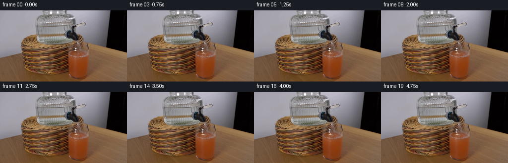
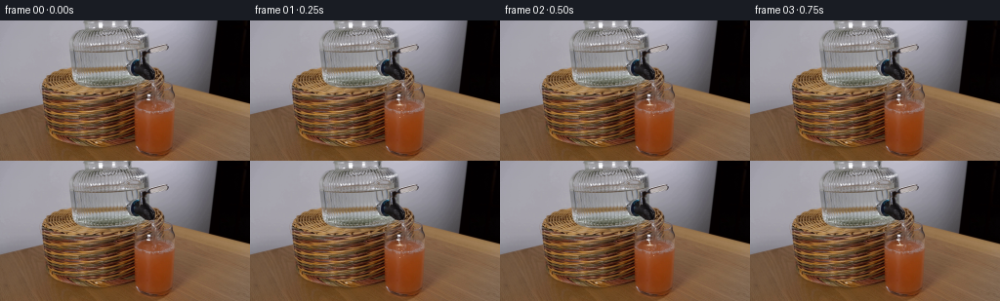
展开代码变化
--- 上一保存版本
+++ 本次保存版本
@@ -53,12 +53,12 @@
u = np.clip((y - 79.7) / 7.0, 0.0, 1.0)
phase = time * 2.15
center = (
- 151.15
- + 2.15 * u
+ 151.75
+ + 1.80 * u
+ 0.23 * np.sin(2.4 * np.pi * u + phase)
+ 0.10 * np.sin(7.0 * u - 1.7 * phase)
)
- width = 0.72 + 0.13 * (1.0 - u) + 0.07 * np.sin(4.0 * np.pi * u - phase)
+ width = 0.76 + 0.10 * (1.0 - u) + 0.06 * np.sin(4.0 * np.pi * u - phase)
return center, width
@@ -78,15 +78,15 @@
shifted_x = np.clip((xx + 1.15).astype(np.int32), 0, W - 1)
shifted_y = np.clip(yy.astype(np.int32), 0, H - 1)
refracted = frame[shifted_y, shifted_x].astype(np.float32) * 1.06 + 7.0
- region = composite(region, refracted, body * 0.48)
- region = composite(region, np.array([190.0, 198.0, 194.0]), body * 0.24)
- region = composite(region, np.array([246.0, 248.0, 242.0]), core * 0.73)
+ region = composite(region, refracted, body * 0.42)
+ region = composite(region, np.array([190.0, 198.0, 194.0]), body * 0.21)
+ region = composite(region, np.array([246.0, 248.0, 242.0]), core * 0.64)
frame[y0:y1, x0:x1] = region
def render_ripples(frame, time):
yy, xx = np.mgrid[0:H, 0:W].astype(np.float32)
- cx, cy = 153.25, 86.1
+ cx, cy = 153.35, 86.1
dx = xx - cx
dy = yy - cy
@@ -126,16 +126,16 @@
# The persistent contact foam is deliberately small: the glass is already
# full, so the visual cue is a tight, agitated patch rather than a new head.
- rx = 2.65 + 0.38 * np.sin(phase * 0.72)
- ry = 0.92 + 0.11 * np.sin(phase + 0.8)
+ rx = 2.45 + 0.32 * np.sin(phase * 0.72)
+ ry = 0.82 + 0.10 * np.sin(phase + 0.8)
cap = soft_ellipse(xx, yy, cx, cy, rx, ry, softness=0.95)
mottling = 0.72 + 0.28 * np.sin(xx * 4.9 + yy * 2.4 + phase * 1.35)
- cap_alpha = cap * (0.34 + 0.13 * mottling)
+ cap_alpha = cap * (0.27 + 0.12 * mottling)
region = frame[y0:y1, x0:x1]
region = composite(region, np.array([229.0, 197.0, 166.0]), cap_alpha)
highlight = soft_ellipse(xx, yy, cx - 0.55, cy - 0.28, 1.85, 0.48, softness=0.65)
- region = composite(region, np.array([250.0, 242.0, 224.0]), highlight * (0.45 + 0.12 * mottling))
+ region = composite(region, np.array([250.0, 242.0, 224.0]), highlight * (0.36 + 0.10 * mottling))
# Ripple rings move outward and fade. Two staggered rings keep the surface
# active at 4 fps without making the motion look periodic.
@@ -146,7 +146,7 @@
q = np.sqrt(((xx - cx) / ring_rx) ** 2 + ((yy - cy) / ring_ry) ** 2)
ring = np.exp(-((q - 1.0) / 0.14) ** 2)
ring *= (1.0 - age) * (0.75 + 0.25 * np.sin(np.arctan2(yy - cy, xx - cx) * 5.0 + phase))
- region = composite(region, np.array([242.0, 171.0, 119.0]), ring * 0.19)
+ region = composite(region, np.array([242.0, 171.0, 119.0]), ring * 0.15)
# Tiny foam bubbles at the contact point.
bubble_data = [
@@ -159,7 +159,7 @@
wobble_x = 0.20 * np.sin(phase * 1.25 + seed)
wobble_y = 0.10 * np.cos(phase * 1.1 + seed)
bubble = soft_ellipse(xx, yy, cx + bx + wobble_x, cy + by + wobble_y, radius, radius * 0.8, 0.6)
- region = composite(region, np.array([248.0, 235.0, 217.0]), bubble * 0.40)
+ region = composite(region, np.array([248.0, 235.0, 217.0]), bubble * 0.34)
frame[y0:y1, x0:x1] = region
@@ -208,6 +208,21 @@
frame[y0:y1, x0:x1] = region
+def render_mixing_plume(frame, time):
+ y0, y1, x0, x1 = 87, 118, 144, 170
+ yy, xx = np.mgrid[y0:y1, x0:x1].astype(np.float32)
+ region = frame[y0:y1, x0:x1]
+ depth = np.clip((yy - 87.0) / 31.0, 0.0, 1.0)
+ center = 153.4 + 0.35 * np.sin(time * 2.0 + yy * 0.23)
+ width = 1.2 + 4.3 * depth
+ plume = np.exp(-((xx - center) / width) ** 2) * np.exp(-depth * 2.6)
+ plume *= smoothstep(87.0, 91.0, yy) * (1.0 - smoothstep(111.0, 117.0, yy))
+ swirl = 0.82 + 0.18 * np.sin(yy * 1.15 - time * 5.3 + xx * 0.35)
+ tint = np.array([190.0, 122.0, 79.0])
+ region = composite(region, np.broadcast_to(tint, region.shape), plume * swirl * 0.10)
+ frame[y0:y1, x0:x1] = region
+
+
def render_frame(base, index):
if index == 0:
return base.copy()
@@ -217,6 +232,7 @@
render_ripples(frame, time)
render_impact(frame, time)
render_internal_bubbles(frame, time)
+ render_mixing_plume(frame, time)
render_stream(frame, time)
render_splash(frame, time)
可观测工具轨迹
实际执行的命令与返回图片。
命令 1exit 0
/bin/bash -c "pwd && rg --files -g 'prompt.txt' -g 'GENERATION_RULES.md' -g '"'!**/.git/**'"' | sort"
命令 2exit 0
/bin/bash -c 'ls -la'
命令 3exit 0
/bin/bash -c 'git status --short --branch'
命令 4exit 0
/bin/bash -c 'cat prompt.txt'
命令 5exit 0
/bin/bash -c 'cat GENERATION_RULES.md'
命令 6exit 0
/bin/bash -c "sed -n '1,240p' artifact_io.py"
命令 7exit 0
/bin/bash -c "sed -n '1,240p' player_template.html"
命令 8exit 0
/bin/bash -c "python - <<'PY'
from PIL import Image
im=Image.open('first_frame.png')
print(im.size, im.mode)
PY"命令 9exit 0
/bin/bash -c "python - <<'PY' import importlib.util for m in ['numpy','PIL','cv2','scipy','skimage','imageio']: print(m, bool(importlib.util.find_spec(m))) PY"
命令 10exit 0
/bin/bash -c "python - <<'PY'
from PIL import Image
im=Image.open('first_frame.png')
for name,box,scale in [
('crop_spout',(115,25,185,95),6),
('crop_glass',(120,62,195,143),6),
('crop_top',(40,0,220,90),4),
]:
c=im.crop(box); c.resize((c.width*scale,c.height*scale),Image.Resampling.NEAREST).save('.tmp/'+name+'.png')
print(name, box)
PY"命令 11exit 0
/bin/bash -c "python - <<'PY'
from PIL import Image,ImageDraw,ImageFont
im=Image.open('first_frame.png').resize((1024,576),Image.Resampling.NEAREST)
d=ImageDraw.Draw(im)
for x in range(0,256,10):
d.line((x*4,0,x*4,576), fill=(255,0,255), width=1)
d.text((x*4+2,2),str(x),fill=(255,255,0))
for y in range(0,144,10):
d.line((0,y*4,1024,y*4), fill=(0,255,255), width=1)
d.text((2,y*4+2),str(y),fill=(255,255,0))
im.save('.tmp/grid.png')
PY"命令 12exit 0
/bin/bash -c "python - <<'PY'
from PIL import Image
im=Image.open('first_frame.png')
c=im.crop((125,45,190,115))
c.resize((650,700),Image.Resampling.NEAREST).save('.tmp/detail.png')
PY"命令 13exit 0
/bin/bash -c "python - <<'PY'
from PIL import Image,ImageDraw
im=Image.open('first_frame.png')
box=(125,40,195,125)
c=im.crop(box).resize((560,680),Image.Resampling.NEAREST)
d=ImageDraw.Draw(c)
for x in range(125,196,5):
X=(x-125)*8
d.line((X,0,X,680),fill=(255,0,255),width=1)
d.text((X+2,2),str(x),fill=(255,255,0))
for y in range(40,126,5):
Y=(y-40)*8
d.line((0,Y,560,Y),fill=(0,255,255),width=1)
d.text((2,Y+1),str(y),fill=(255,255,0))
c.save('.tmp/detail_grid.png')
PY"命令 14exit 0
/bin/bash -c "python - <<'PY'
from PIL import Image
im=Image.open('first_frame.png')
pts=[(143,77),(146,78),(150,78),(153,78),(156,79),(158,80),(160,81),(162,83),(163,86),(163,90),(163,94),(163,98),(163,101),(164,104),(165,106),(166,107),(168,107),(170,105),(172,104),(174,103),(176,104),(178,106),(179,108),(181,109),(183,110),(184,112),(185,114),(186,116),(187,118),(188,120),(188,122),(189,123),(189,125)]
for p in pts: print(p,im.getpixel(p))
PY"命令 15exit 0
/bin/bash -c "python - <<'PY'
from PIL import Image
im=Image.open('first_frame.png')
for y in range(72,112):
row=[]
for x in range(138,180):
r,g,b=im.getpixel((x,y))
if r<55 and g<45: ch='#'
elif r<90 and g<75: ch='X'
elif b>g*1.05: ch='B'
elif r>120 and r>g*1.25: ch='j'
elif max(r,g,b)>155: ch='.'
else: ch=' '
row.append(ch)
print(f'{y:3} '+''.join(row))
PY"命令 16exit 0
/bin/bash -c "python - <<'PY'
from PIL import Image
im=Image.open('first_frame.png')
for y in [72,73,74,75,76,77,78,79,80,81,82,83,84,85]:
print('\\ny',y)
for x in range(138,180):
r,g,b=im.getpixel((x,y))
print(f'{x}:{r:3},{g:3},{b:3}',end=' ')
if (x-137)%4==0: print()
PY"命令 17exit 1
/bin/bash -c "python - <<'PY'
from PIL import Image
im=Image.open('first_frame.png')
# print approximate geometry profiles based on brightness/glass edges
for y in range(74,145,2):
vals=[]
for x in range(120,195):
r,g,b=im.getpixel((x,y))
vals.append((x,r,g,b))
print(y, min(vals,key=lambda q:q[1]), max(vals,key=lambda q:q[1]), vals[0],vals[-1])
PY"命令 18exit 0
/bin/bash -c "python - <<'PY'
from PIL import Image
im=Image.open('first_frame.png')
# save nearest upscale glass with coordinates every 2 pixels
box=(130,70,195,144)
s=8
c=im.crop(box).resize(((box[2]-box[0])*s,(box[3]-box[1])*s),Image.Resampling.NEAREST)
from PIL import ImageDraw
d=ImageDraw.Draw(c)
for x in range(130,196,5):
X=(x-box[0])*s; d.line((X,0,X,c.height),fill=(255,0,255)); d.text((X+2,2),str(x),fill=(255,255,0))
for y in range(70,145,5):
Y=(y-box[1])*s; d.line((0,Y,c.width,Y),fill=(0,255,255)); d.text((2,Y+1),str(y),fill=(255,255,0))
c.save('.tmp/glass_grid.png')
PY"命令 19exit 0
/bin/bash -c "python - <<'PY'
import cv2, numpy as np
im=cv2.imread('first_frame.png')
# gradients in candidate area, print edge strength
for y in range(70,115,2):
vals=[]
for x in range(135,185):
r,g,b=map(int,im[y,x][::-1]); vals.append((r+g+b,x,r,g,b))
vals.sort()
print(y, vals[:3], vals[-3:])
PY"命令 20exit 0
/bin/bash -c "python - <<'PY'
from PIL import Image,ImageDraw
im=Image.open('first_frame.png')
box=(120,60,195,144);s=8
c=im.crop(box).resize(((box[2]-box[0])*s,(box[3]-box[1])*s),Image.Resampling.NEAREST)
d=ImageDraw.Draw(c)
for x in range(120,196,2):
X=(x-box[0])*s; d.line((X,0,X,c.height),fill=(255,0,255),width=1)
if x%10==0:d.text((X+2,2),str(x),fill=(255,255,0))
for y in range(60,145,2):
Y=(y-box[1])*s; d.line((0,Y,c.width,Y),fill=(0,255,255),width=1)
if y%10==0:d.text((2,Y+1),str(y),fill=(255,255,0))
c.save('.tmp/glass_grid2.png')
PY"命令 21exit 0
/bin/bash -c "python - <<'PY'
from PIL import Image
im=Image.open('first_frame.png')
for name,box in [('nozzle',(125,55,185,100)),('glassall',(125,70,195,144))]:
c=im.crop(box).resize(((box[2]-box[0])*12,(box[3]-box[1])*12),Image.Resampling.LANCZOS)
c.save('.tmp/'+name+'_smooth.png')
PY"命令 22exit 0
/bin/bash -c "python - <<'PY'
from PIL import Image
im=Image.open('first_frame.png')
# ascii luminance around nozzle/glass with x labels
for y in range(52,105):
s=''
for x in range(135,185):
r,g,b=im.getpixel((x,y)); v=(r+g+b)/3
if v<35: c='#'
elif v<55: c='@'
elif v<75: c='O'
elif v<95: c='o'
elif v<120: c='+'
elif v<150: c='-'
elif v<190: c='.'
else: c=' '
s+=c
print(f'{y:3} {s}')
print(' '+''.join(str((x//10)%10) for x in range(135,185)))
print(' '+''.join(str(x%10) for x in range(135,185)))
PY"命令 23exit 0
/bin/bash -c "python - <<'PY'
from PIL import Image
im=Image.open('first_frame.png')
# get RGB ranges / sample strips for glass and stream areas
for box in [(140,65,170,90),(150,90,185,130),(160,120,190,140)]:
print(box)
for y in range(box[1],box[3],5):
print(y,[im.getpixel((x,y)) for x in range(box[0],box[2],5)])
PY"命令 24exit 0
/bin/bash -c "python - <<'PY'
from PIL import Image
im=Image.open('first_frame.png')
# detect per-row likely glass outer edge via color deviation from bg and bottle
for y in range(84,143,4):
row=[]
for x in range(130,196):
r,g,b=im.getpixel((x,y))
# juice red dominance
score=r-g
if score>40: row.append(x)
print(y, min(row) if row else None, max(row) if row else None)
PY"命令 25exit 0
/bin/bash -c "python - <<'PY'
from PIL import Image,ImageDraw
im=Image.open('first_frame.png')
box=(115,55,200,110); s=10
c=im.crop(box).resize(((box[2]-box[0])*s,(box[3]-box[1])*s),Image.Resampling.LANCZOS)
d=ImageDraw.Draw(c)
for x in range(115,201,5):
X=(x-box[0])*s; d.line((X,0,X,c.height),fill=(255,0,255),width=1)
d.text((X+2,2),str(x),fill=(255,255,0))
for y in range(55,111,5):
Y=(y-box[1])*s; d.line((0,Y,c.width,Y),fill=(0,255,255),width=1)
d.text((2,Y+1),str(y),fill=(255,255,0))
c.save('.tmp/spout_glass_grid.png')
PY"命令 26exit 0
/bin/bash -c "python - <<'PY'
from PIL import Image
im=Image.open('first_frame.png')
# inspect exact nozzle silhouette rows in pixels using a focused crop, print 2x ascii
for y in range(62,92):
s=''
for x in range(140,176):
r,g,b=im.getpixel((x,y)); v=(r+g+b)/3
s += ' .:-=+*#%@'[min(9,int(v/256*10))]
print(f'{y:02} {s}')
print(' '+''.join(str(x//10%10) for x in range(140,176)))
print(' '+''.join(str(x%10) for x in range(140,176)))
PY"命令 27exit 0
/bin/bash -c "python - <<'PY'
from PIL import Image
im=Image.open('first_frame.png')
for y in range(58,88):
print('\\ny',y)
for x in range(140,176):
r,g,b=im.getpixel((x,y))
print(f'{x}:{r:3},{g:3},{b:3}',end=' ')
if (x-139)%4==0:print()
PY"命令 28exit 0
/bin/bash -c "python - <<'PY'
from PIL import Image
im=Image.open('first_frame.png')
for box in [(130,60,180,100),(145,80,185,115),(150,95,195,140),(145,125,195,144)]:
print('BOX',box)
for y in range(box[1],box[3],3):
print(y,' '.join(f'{x}:{im.getpixel((x,y))[0]:03d}/{im.getpixel((x,y))[1]:03d}/{im.getpixel((x,y))[2]:03d}' for x in range(box[0],box[2],3)))
PY"命令 29exit 1
/bin/bash -c 'python generate.py'
命令 30exit 0
/bin/bash -c 'python generate.py'
命令 31exit 0
/bin/bash -c "python - <<'PY'
from PIL import Image
for i in [1,4,8,12,16,19]:
im=Image.open(f'frames/{i:02d}.png').crop((135,68,190,120)).resize((660,624),Image.Resampling.NEAREST)
im.save(f'.tmp/f{i:02d}.png')
PY"命令 32exit 0
/bin/bash -c "python - <<'PY'
from PIL import Image
import numpy as np
base=np.asarray(Image.open('first_frame.png')).astype(int)
for i in [1,4,8,12,16,19]:
a=np.asarray(Image.open(f'frames/{i:02d}.png')).astype(int)
d=np.abs(a-base).sum(2)
ys,xs=np.where(d>3)
print(i, 'bbox', (xs.min(),ys.min(),xs.max(),ys.max()), 'pixels',len(xs),'max',d.max(), 'mean changed',d[d>3].mean())
PY"命令 33exit 0
/bin/bash -c "python - <<'PY'
from PIL import Image,ImageDraw
W,H=55,52;s=5
sheet=Image.new('RGB',(W*s*5,(H*s+18)*4),(20,20,24))
d=ImageDraw.Draw(sheet)
for i in range(20):
im=Image.open(f'frames/{i:02d}.png').crop((135,68,190,120)).resize((W*s,H*s),Image.Resampling.NEAREST)
x=(i%5)*W*s;y=(i//5)*(H*s+18)
d.text((x+4,y+2),f'{i:02d}',fill='white')
sheet.paste(im,(x,y+18))
sheet.save('.tmp/motion_sheet.png')
PY"命令 34exit 0
/bin/bash -c "python - <<'PY'
from PIL import Image
for i in [1,4,8,12,16]:
im=Image.open(f'frames/{i:02d}.png')
im.resize((1024,576),Image.Resampling.NEAREST).save(f'.tmp/full{i:02d}.png')
PY"命令 35exit 0
/bin/bash -c "python - <<'PY'
from PIL import Image,ImageDraw
# draw actual stream center and mask predicted over frame 1
im=Image.open('frames/01.png').crop((138,74,164,94)).resize((520,400),Image.Resampling.NEAREST)
d=ImageDraw.Draw(im)
for x in range(138,165):
X=(x-138)*20; d.line((X,0,X,400),fill=(255,0,255)); d.text((X+2,2),str(x),fill=(255,255,0))
for y in range(74,95):
Y=(y-74)*20; d.line((0,Y,520,Y),fill=(0,255,255)); d.text((2,Y+1),str(y),fill=(255,255,0))
im.save('.tmp/streamgrid.png')
PY"命令 36exit 0
/bin/bash -c "python - <<'PY'
from PIL import Image
im=Image.open('first_frame.png')
for y in range(74,90):
print(y, [(x,im.getpixel((x,y))) for x in range(147,158)])
PY"命令 37exit 0
/bin/bash -c "python - <<'PY'
from PIL import Image
import numpy as np
base=np.asarray(Image.open('first_frame.png')).astype(float)
for i in [1,2,3,4,5,6]:
a=np.asarray(Image.open(f'frames/{i:02d}.png')).astype(float)
print('\\nframe',i)
for y in range(79,92):
row=[]
for x in range(148,158):
d=(a[y,x]-base[y,x]).sum()
if abs(d)>12: row.append(f'{x}:{d:+.0f}')
print(y,' '.join(row))
PY"命令 38exit 0
/bin/bash -c "python - <<'PY'
from PIL import Image
frames=[Image.open(f'frames/{i:02d}.png') for i in range(20)]
frames[0].save('.tmp/preview.gif',save_all=True,append_images=frames[1:],duration=250,loop=0)
PY"命令 39exit 0
/bin/bash -c "python - <<'PY'
from PIL import Image,ImageDraw
# Build an enhanced contact sheet 2x with only glass+nozzle, includes all frames
W,H=70,65;s=4
sheet=Image.new('RGB',(W*s*4,(H*s+18)*5),(18,20,24))
d=ImageDraw.Draw(sheet)
for i in range(20):
im=Image.open(f'frames/{i:02d}.png').crop((125,65,195,130)).resize((W*s,H*s),Image.Resampling.NEAREST)
x=(i%4)*W*s;y=(i//4)*(H*s+18)
d.text((x+4,y+2),f'{i:02d} {i/4:.2f}s',fill='white')
sheet.paste(im,(x,y+18))
sheet.save('.tmp/allframes.png')
PY"命令 40exit 0
/bin/bash -c "python - <<'PY'
from PIL import Image
im=Image.open('first_frame.png')
# show broad scene with target overlay to decide composition
im2=im.resize((1024,576),Image.Resampling.LANCZOS)
from PIL import ImageDraw
d=ImageDraw.Draw(im2)
# draw crop box
d.rectangle((135*4,68*4,190*4,120*4),outline=(0,255,0),width=3)
im2.save('.tmp/overlay.png')
PY"命令 41exit 0
/bin/bash -c 'python generate.py'
命令 42exit 0
/bin/bash -c "python - <<'PY'
from PIL import Image
import numpy as np
base=np.asarray(Image.open('first_frame.png')).astype(int)
a=np.asarray(Image.open('frames/04.png')).astype(int)
d=np.abs(a-base).sum(2)
ys,xs=np.where(d>3)
print('bbox', (xs.min(),ys.min(),xs.max(),ys.max()), 'pixels',len(xs),'max',d.max())
PY"命令 43exit 0
/bin/bash -c "python - <<'PY'
from PIL import Image
im=Image.open('frames/04.png').crop((135,68,190,120)).resize((660,624),Image.Resampling.NEAREST)
im.save('.tmp/final04.png')
PY"命令 44exit 0
/bin/bash -c "python - <<'PY'
from pathlib import Path
import numpy as np
from PIL import Image
root=Path('.')
a=np.asarray(Image.open('first_frame.png').convert('RGB'))
b=np.asarray(Image.open('frames/00.png').convert('RGB'))
print('frame0_exact', np.array_equal(a,b))
print('frames', len(list((root/'frames').glob('*.png'))))
print('frame0_shape', b.shape, b.dtype)
with np.load('pixels.npz') as z:
p=z['pixels']
print('pixels_shape',p.shape,'pixels_dtype',p.dtype)
print('index_exists',(root/'index.html').exists(),'index_bytes',(root/'index.html').stat().st_size)
PY"命令 45exit 0
/bin/bash -c 'python -m py_compile generate.py artifact_io.py'
命令 46exit 0
/bin/bash -c 'du -h index.html pixels.npz inspection.png transition_check.png && sha256sum first_frame.png frames/00.png'
命令 47exit 0
/bin/bash -c 'git status --short -- . && git diff --stat -- .'
命令 48exit 0
/bin/bash -c 'ls -lh generate.py index.html pixels.npz inspection.png frames/00.png frames/19.png'
命令 49exit 0
/bin/bash -c "python - <<'PY'
from pathlib import Path
import re,base64,json
text=Path('index.html').read_text()
m=re.search(r'const DATA=(\\{.*?\\}),W=',text)
data=json.loads(m.group(1))
print(data['width'],data['height'],data['frames'],data['fps'],len(data['deltas']))
print('caption',data['caption'])
print('audio',data['audio'])
# verify every delta packet parses
for i,s in enumerate(data['deltas']):
b=base64.b64decode(s); a=memoryview(b).cast('I')
j=0
while j<len(a):
start,count=int(a[j]),int(a[j+1]); j+=2+count
assert j==len(a),(i,j,len(a))
print('deltas_valid',True)
PY"命令 50exit 0
/bin/bash -c 'which chromium || which chromium-browser || which google-chrome || true'
命令 51exit 0
/bin/bash -c "python - <<'PY'
import importlib.util
print('playwright', bool(importlib.util.find_spec('playwright')))
print('selenium', bool(importlib.util.find_spec('selenium')))
PY"命令 52exit 1
/bin/bash -c "python - <<'PY'
from playwright.sync_api import sync_playwright
from pathlib import Path
import json
with sync_playwright() as p:
browser=p.chromium.launch(headless=True)
page=browser.new_page(viewport={'width':900,'height':600})
errors=[]
page.on('pageerror',lambda e: errors.append(str(e)))
page.goto(Path('index.html').resolve().as_uri())
page.wait_for_function('window.__pixelReady === true')
page.locator('#seek').fill('4')
page.locator('#seek').dispatch_event('input')
page.screenshot(path='.tmp/player_check.png')
state=page.evaluate(\"({time:document.querySelector('#time').textContent,canvas:[document.querySelector('#canvas').width,document.querySelector('#canvas').height]})\")
print(state, 'errors',errors)
browser.close()
PY"命令 53exit 1
/bin/bash -c 'TMPDIR="$PWD/.tmp" python - <<'"'PY'
from playwright.sync_api import sync_playwright
from pathlib import Path
with sync_playwright() as p:
browser=p.chromium.launch(headless=True)
page=browser.new_page(viewport={'width':900,'height':600})
errors=[]
page.on('pageerror',lambda e: errors.append(str(e)))
page.goto(Path('index.html').resolve().as_uri())
page.wait_for_function('window.__pixelReady === true')
page.locator('#seek').fill('4')
page.locator('#seek').dispatch_event('input')
page.screenshot(path='.tmp/player_check.png')
state=page.evaluate(\"({time:document.querySelector('#time').textContent,canvas:[document.querySelector('#canvas').width,document.querySelector('#canvas').height]})\")
print(state, 'errors',errors)
browser.close()
PY"视觉工具实际返回图片 1

视觉工具实际返回图片 2
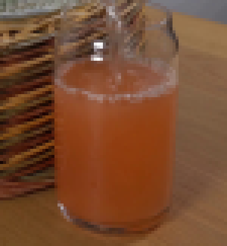
视觉工具实际返回图片 3
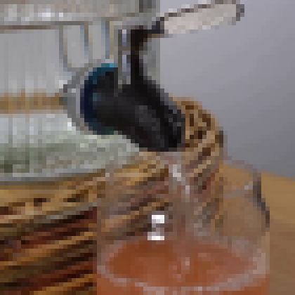
视觉工具实际返回图片 4
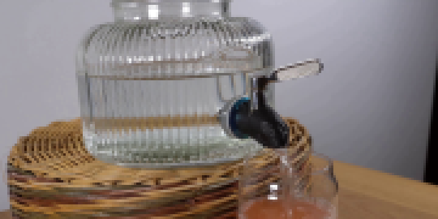
视觉工具实际返回图片 5
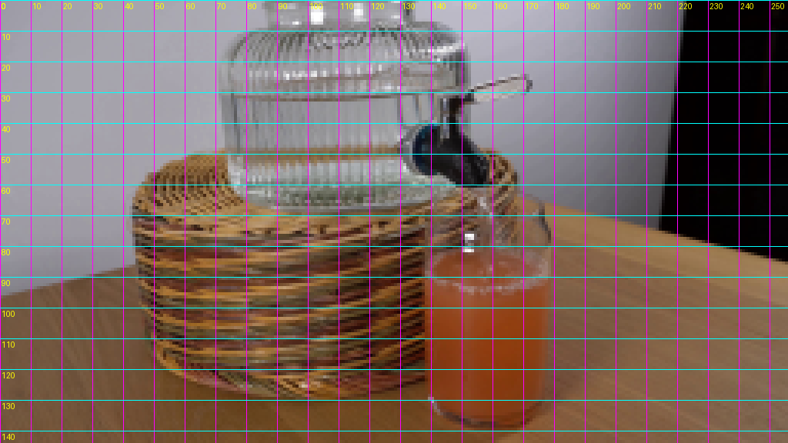
视觉工具实际返回图片 6
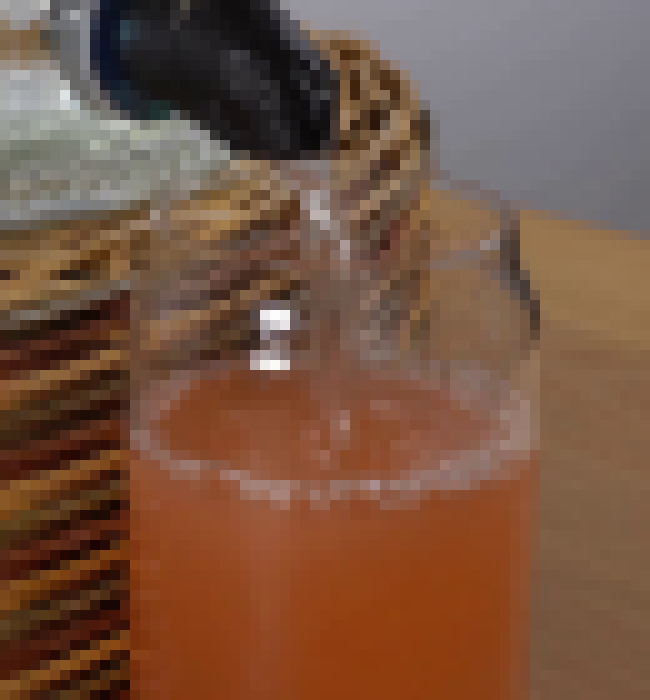
视觉工具实际返回图片 7
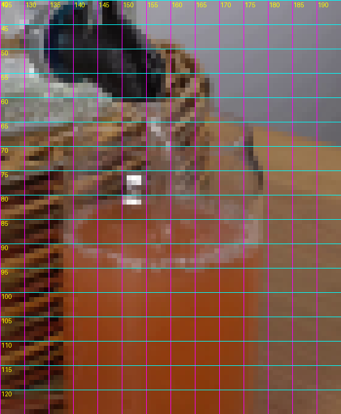
视觉工具实际返回图片 8
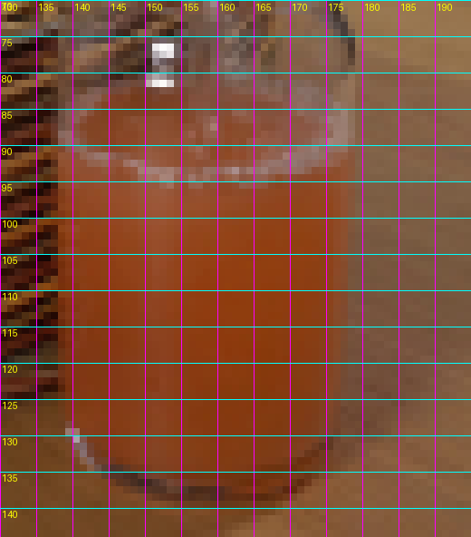
视觉工具实际返回图片 9
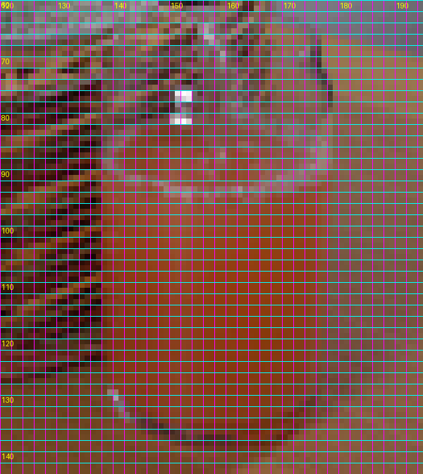
视觉工具实际返回图片 10
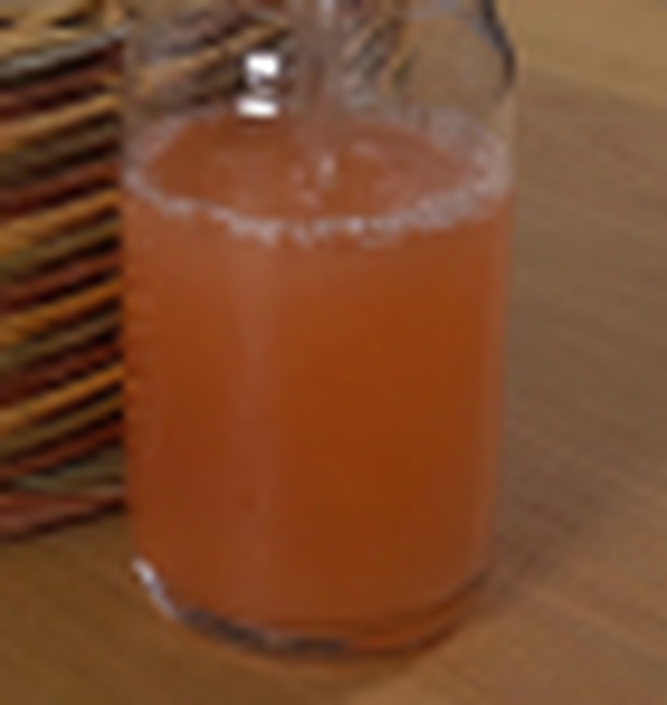
视觉工具实际返回图片 11
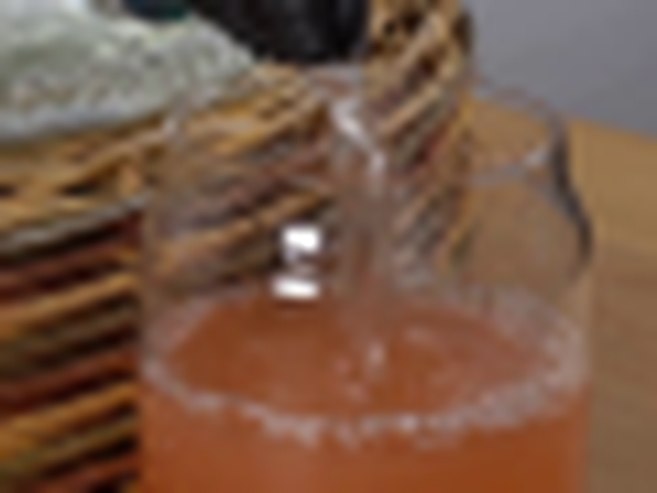
视觉工具实际返回图片 12
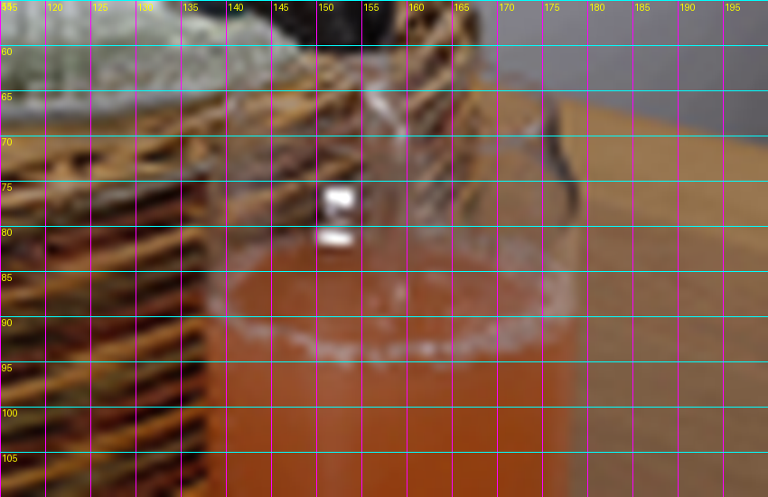
视觉工具实际返回图片 13

视觉工具实际返回图片 14

视觉工具实际返回图片 15
视觉工具实际返回图片 16
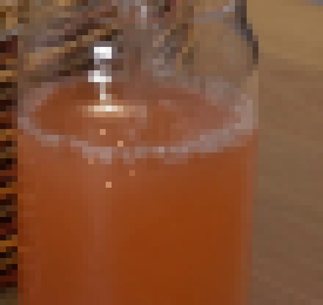
视觉工具实际返回图片 17
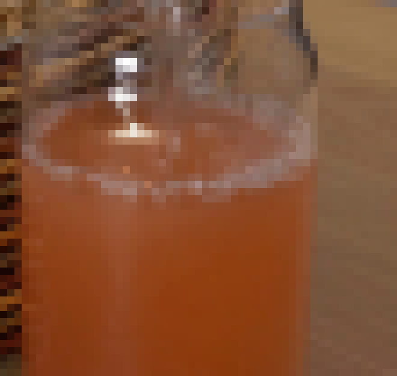
视觉工具实际返回图片 18
视觉工具实际返回图片 19
视觉工具实际返回图片 20
视觉工具实际返回图片 21
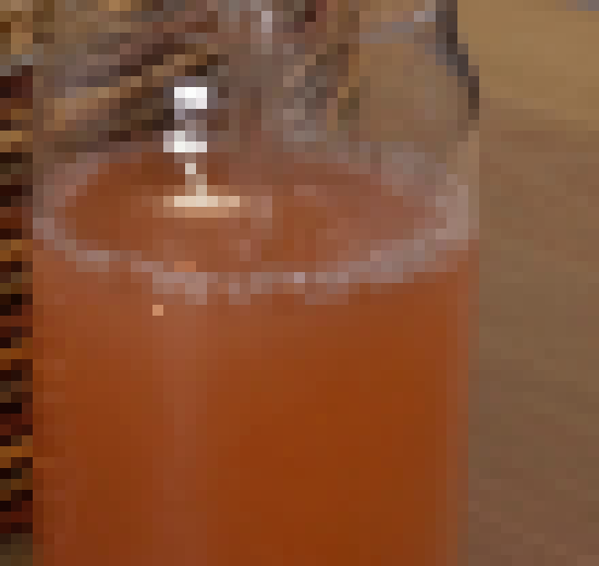
视觉工具实际返回图片 22
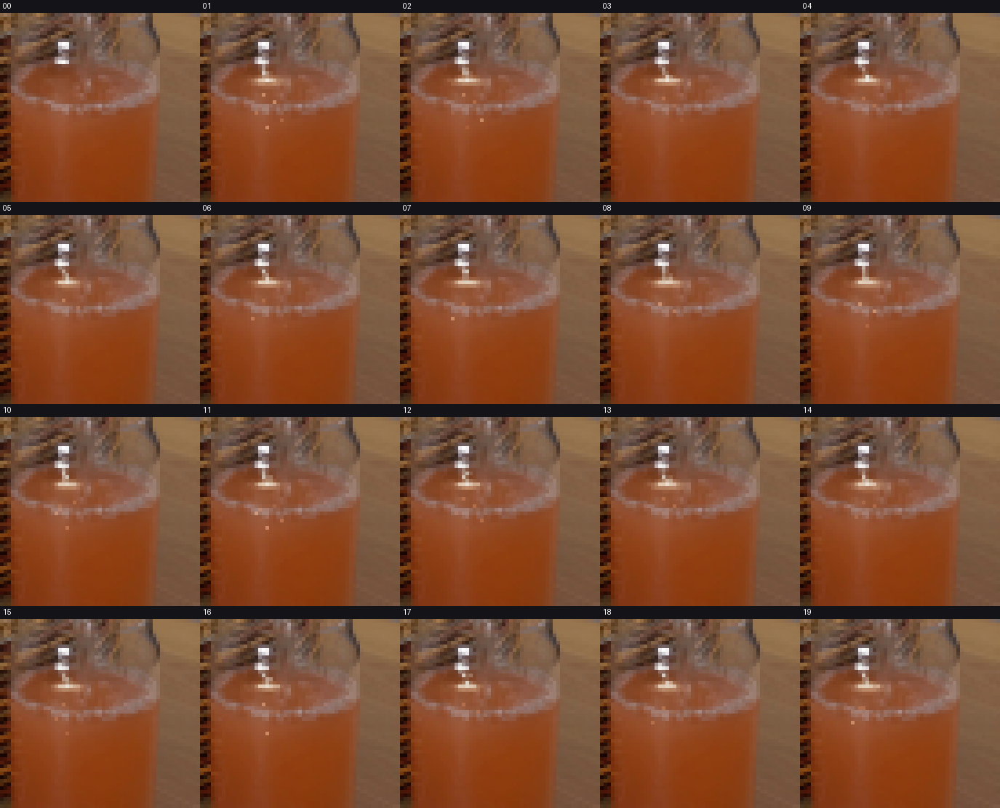
视觉工具实际返回图片 23
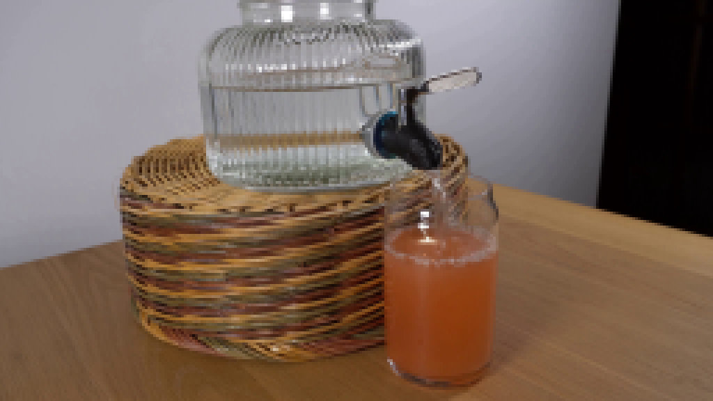
视觉工具实际返回图片 24
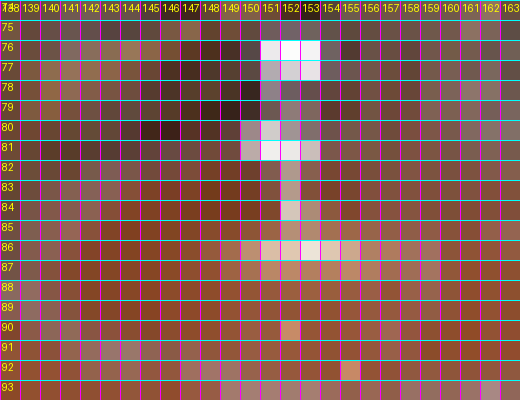
视觉工具实际返回图片 25
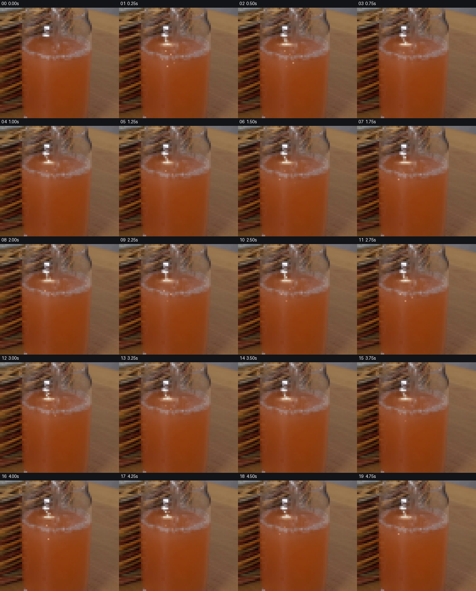
视觉工具实际返回图片 26

视觉工具实际返回图片 27
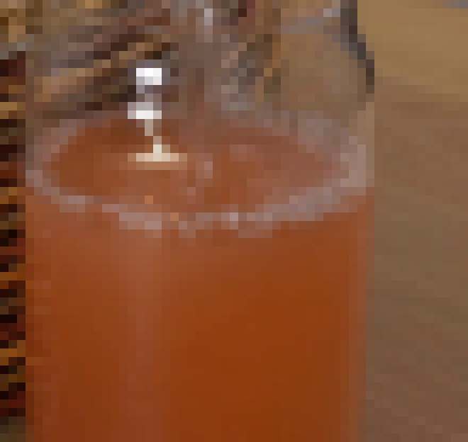
保存候选 2 份；完成命令 53 次；可验证图片返回 27 张。原始 API 响应与完整日志保留在本地。